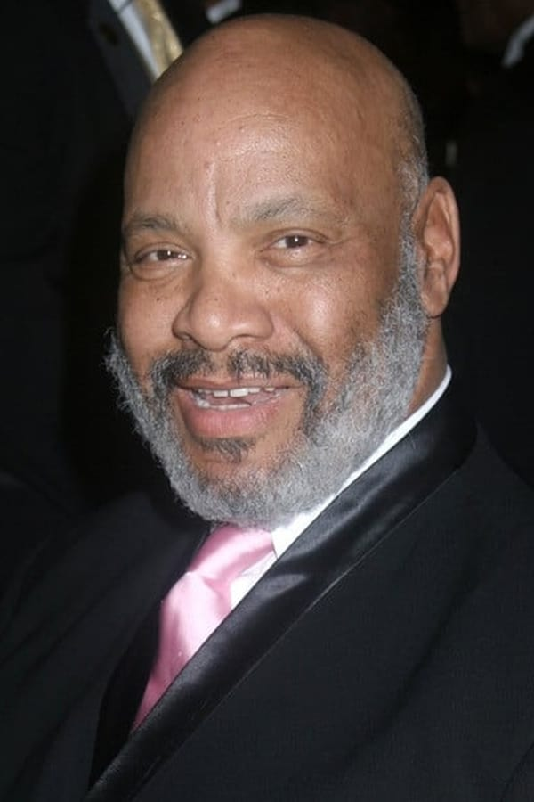
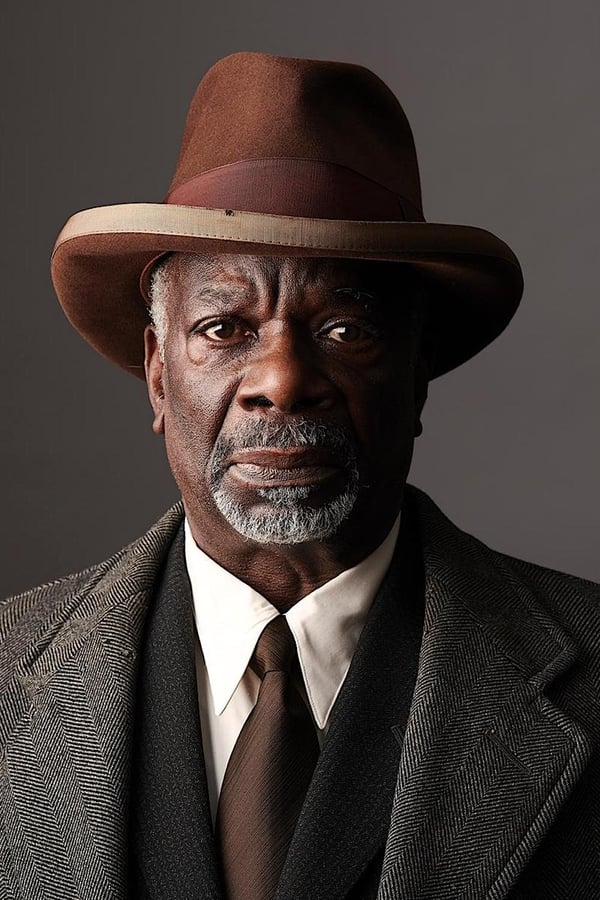
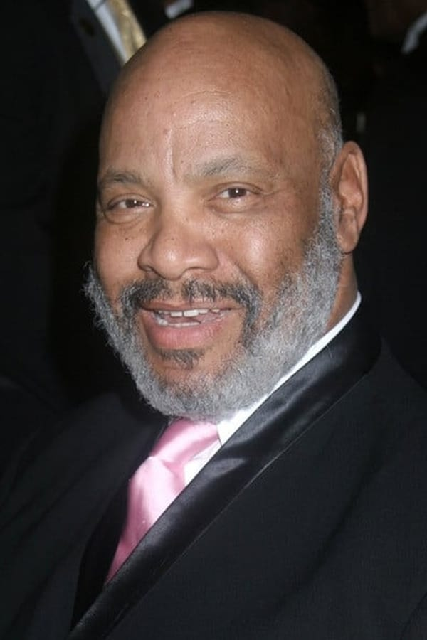
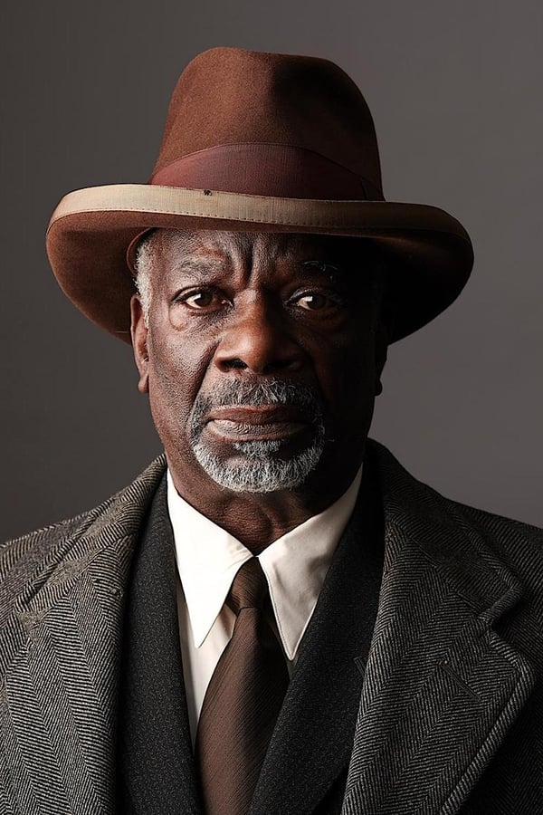

El príncipe de Bel-Air: El reecuentro (2020)
15/12/2021 (ES) • Documental • 1h 15m
El reparto de El príncipe de Bel-Air se reúne para la celebración del 30 aniversario de la icónica serie. Una noche llena de risas, música, baile e invitados sorpresa.
Marcus Raboy
HBO Max
 



Will Smith
James Avery
Alfonso Ribeiro
Joseph Marcell

JuanCharles

30 años después de realizar la serie, después de la muerte del gran Tio Phillip Banks (James Avery) y después del del trailer - cortometraje en plan dramático, llega el reencuentro que por petición popular todos estábamos esperando. Es un reencuentro maravilloso que nos muestra, a través de todos los personajes, un repaso por lo que fue la serie y qué significó para ellos, dentro de sus vidas. Además, viene con una sorpresa incorporada que no podría desvelar y que hará las delicias de los fans. Así, digo, que obre la magia y nos reencontremos con los personajes otra vez.
Tatiana N.
Ahora que está tan de moda que las series de antaño vuelvan y se junten para retomar la trama donde la dejaron años atrás, era lógico que algo de ‘El Príncipe de Bel-Air’ nos terminara llegando de alguna forma. Esta vez, es una simple reunión del reparto original que tan buenos momentos nos dio en el pasado. Uno de los recuerdos de mi infancia es comer en familia viendo la televisión, creo que era Antena 3 la que emitía la famosa serie que catapultó al estrellato a Will Smith. Así, se recuerdan tiempos pasados, en los que el reparto disfrutaba de un buen ambiente con el público y dónde no se esconde ni el sonado cambio de actriz con el personaje de Tía Viv ni el lógico y emotivo recuerdo al desaparecido James Avery. ‘The Fresh Prince of Bel-Air Reunion’ sirve de excusa al espectador para volver a ver aquel fantástico show de treinta minutos, capaz de ser divertido, irónico, dramático y crítico a la vez. El tiempo ha hecho mella en todos ellos, pero es curioso como la serie se podría ver hoy sin que sus tramas hayan envejecido.
Paulo Londra
Will Smith fue uno más de los raperos a los que se pasó a hacer papeles en series o películas, como Ice T, que todavía sigue, Tupac Shakur, Mario Van Peebles, que también sigue, pero en lugar de ser el negro duro él era el negro gracioso. Y funcionó. "El príncipe de Bel AIr" nos mostraba a un negro como juez viviendo en el lujoso barrio de los ricos. Los negros solo estaban para cantar y ser sirvientes en casas de blancos o para jugar al baloncesto, y aquí eran asimilados en capacidades aunque manteniendo sus peculiaridades en el vestir, aunque aún había actrices que se alisaban el pelo para parecer algo menos negros. Este capítulo, solo apto y recomendado para los que vieron la serie original, está muy logrado y, fuera del lado emotivo, recuerda algunas cosas que pasaban, o se podían hacer, hace 30 años.